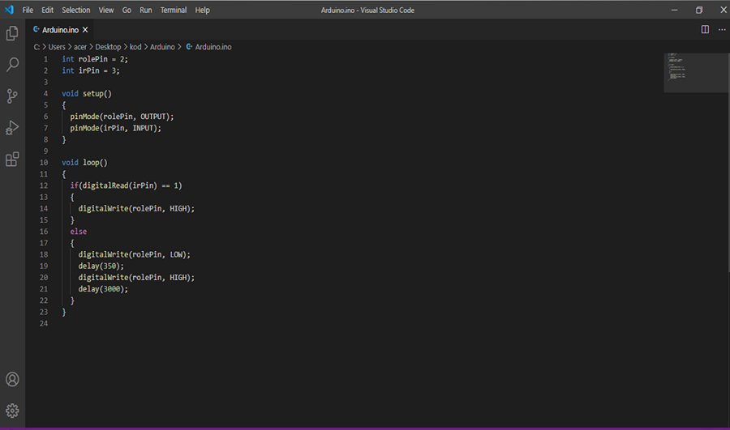
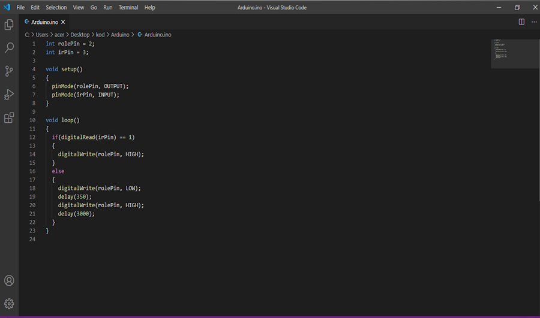

Genel Özellikleri
Mikrodenetleyici: ATmega328. Çalışma Gerilimi: 5V. Giriş Gerilimi (önerilen): 7-12V. Giriş Gerilimi (limit): 6-20V. Dijital G/Ç Pinleri: 14 (6 tanesi PWM çıkışı) Analog Giriş Pinleri: 6. Her G/Ç için Akım: 40 mA. 3.3V Çıkış için Akım: 50 mA.